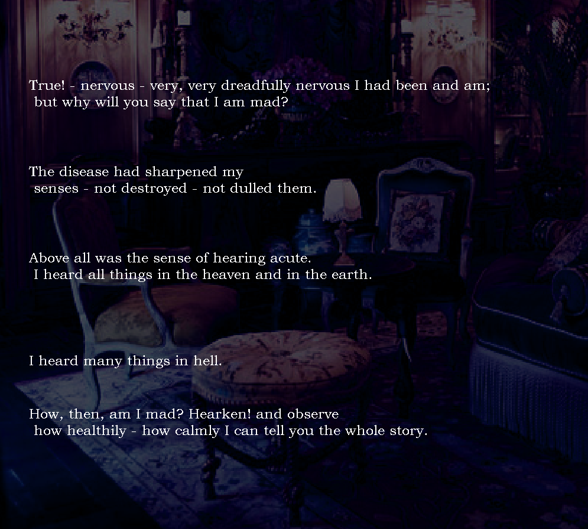
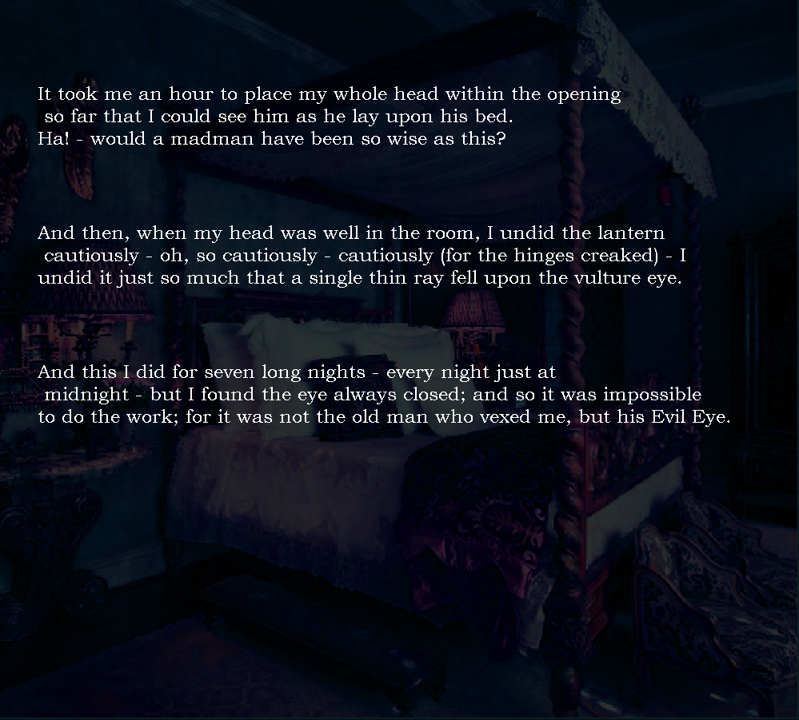
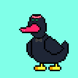

I Can (Not) Create a Good Website
Welcome to my website. It does not really exist to serve a purpose other than to be created. I decided to make it so I could learn web-development
using HTML & CSS. This site showcases some other projects I picked up using other languages such as JavaScript and GML. This is the most up-to-date version.
Currently Working On
Added a favicon and got my website secure, now I need to think of more things to add while keeping it simple. I really hate overdesigned websites so I will be careful not to add too much stuff...
Still working on the NFT project so I won't take on anything new until that's finished. I would like to create a tower defence game in the near future and
create something that will work on mobile devices. It would be interesting to make some kind of software that can produce and decode encrytions for text as well.
Version 1 --> Version 2 --> Version 3 --> Version 4 --> Version 5
I Can (Not) Create a Kinetic Novel
What is a kinetic novel? A kinetic novel is a type of video game and a sub-category of visual novel. A visual novel is
a game that displays contains writing similar to a novel and is interactive. Lines of text are displayed individually on command and are accompanied by
music and background visuals. The defining feature of a visual novel is the ability to make choices that impact the narrative. These choices lead
to the player navigating different story "routes". A kinetic novel lacks the addition of different routes and instead has only one "true route".
In an attempt to expand my skills with the language GML (which was written in C++ & C#) beyond the realm of top-down adventure games and old-school shoot 'em ups, I decided
to try making my own kinetic novel. I was only interested in the coding aspect of the creation and decided not to write an original story, and instead
to adapt the already existing short-story "A tell-Tale Heart" by Edgar Allan Poe into a kinetic novel.
I opted to do go with an early 00's look for my game with a box ratio for the screen and (un)intentional lack of features besides the text istelf. The
background images were sourced online and altered via Photoshop by me to create a consistant atmosphere to complement the dark tones of the story. The
3 sound tracks found in the game were ripped from YouTube and put in the game.


This is where I would put a link of some kind of button to download and play my kinetic novel for free, but the .exe file is too big to upload to my
repository and I don't really want to set up a DropBox just for this. You're just going to have to take my word for it that it's a good game.
I Can (Not) Create an NFT
What is an NFT? It's basically just a file of some kind, usually an image, that is supposedly unique. It stands for non-fungible token and some people
are dumb enough to pay big bucks to get their hands on one. They are sold on various online marketplaces and are usually purchased with cryto-currency. For some reason or another I
decided to make one myself
This NFT is my only project that invloved a direct collaboration. The art was not created by me and consists of different layers that were made on Photoshop.
I converted these individual layers into exactly 1000 different PNG images using JavaScript in Visual Studio. A majority of the code I used in VS was from
a public repository that contained scripts for doing weighted randomising specifically for NFT creation.

I also took on the responsibilty of creating and managing a public website that would be used to sell these NFTs in exchange for the cryto-currency Solana.
The site followed a brief and had to display all the information that was given to me. Making the site itself was easy as I had already created most of this website. But now I have to
integrate crypto wallet transaction into it which I don't know how to do yet.
Am I getting paid to do this? no. Will the NFT actually be launched? 50/50 chance. Did this experience make me appreciate the idea of buying
PNGs for $$$ any more than I did at the start? nope.
You Can (Not) Access The Full Site on Mobile
It appears that you are trying to look at this website on a mobile device! Try looking at it on a desktop computer or a laptop instead.

Anyway, I guess this kind of counts as part of the website so if you visit here on a desktop you will have had the full experience that Eziprez.online has to offer.